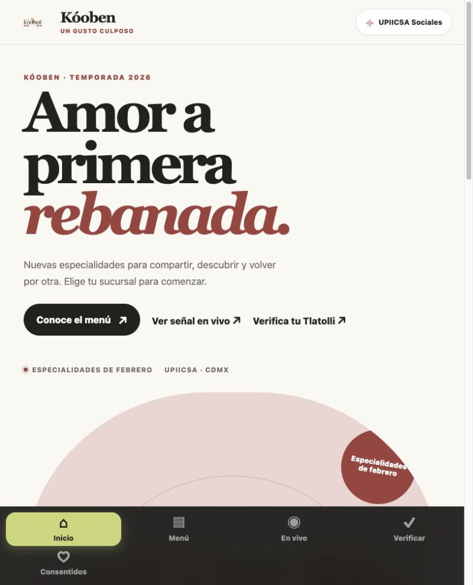

Atraer
Publicas, pero tu mensaje se pierde entre tantos canales.
→ Encuentra a las personas que ya buscan lo que haces.Ver marketing ↗ecosistemas digitales para negocios vivos
Conectamos clientes, datos y marketing para que cada acción te ayude a conocer mejor lo que haces.
el punto de partida
Tu negocio ya tiene piezas valiosas. Cuando no conversan entre sí, cada esfuerzo empieza de cero.
Una vista completa empieza por escuchar todas las señales.
¿Tus clientes no regresan?
¿Publicas, pero no sabes si funciona?
¿Tus herramientas están desconectadas?
¿Vendes y no sabes qué lo provocó?
¿Tu conocimiento vive en la cabeza de alguien?
¿No sabes qué horarios concentran tu actividad?
¿Tus transmisiones terminan cuando apagas la cámara?
¿Tus ubicaciones aparecen donde te necesitan?
¿Sabes qué días realmente compra tu cliente?
Conectar no es agregar otra herramienta.
Tlatolli conecta estas piezas.
un ecosistema, ocho movimientos
El ciclo no termina con una venta: cada señal abre una conversación nueva.
Publicas, pero tu mensaje se pierde entre tantos canales.
→ Encuentra a las personas que ya buscan lo que haces.Ver marketing ↗Tu presencia informa, pero no da el siguiente paso.
→ Diseña una puerta clara para comenzar la relación.Ver presencia ↗Las interacciones suceden, pero nadie las reconoce juntas.
→ Mira a la persona detrás de cada señal.Ver panel ↗Tienes datos, pero no siempre sabes qué te están diciendo.
→ Convierte preguntas en patrones que puedas usar.Ver analítica ↗Una compra termina y la conversación se enfría.
→ Dale a cada cliente una razón para volver.Ver fidelización ↗Hay actividad por todos lados, pero cuesta leerla.
→ Observa lo que ocurre sin perderte en números.Ver analítica ↗Repites esfuerzos sin saber qué vale la pena conservar.
→ Elige tu siguiente movimiento con contexto.Ver decisiones ↗El aprendizaje se queda guardado y el ciclo se detiene.
→ Regresa al mercado con una idea más precisa.Volver a atraer ↗Presencia · convertir
Una presencia clara ayuda a que la siguiente acción sea obvia. Aquí puedes ver cómo se vería una entrada conectada con tu negocio.
Comida que te hace volver
Elige una fecha, descubre el menú y llega con todo claro.
Menú, horarios y una forma sencilla de reservar.
Tu siguiente señal
Una relación útil recuerda señales, reconoce visitas y abre una conversación nueva. Esta interfaz es una demostración.
Hola, persona invitada.
TL-DEMO-RESTAURANTE-01
Sin movimientos todavía en esta demostración.
El teléfono y el POS muestran el mismo estado de ejemplo.
Login y QR están en prototipo.
Apple y Google Wallet sin configurar; próximamente.
La vista administrativa usa datos de demostración.
conocer · medir
Tu negocio ya genera señales. Tlatolli las ordena para que una observación pueda convertirse en un siguiente paso.
Datos de ejemploEl dolor: mirar números sin saber qué hacer con ellos.
La oportunidad: encontrar un patrón, probar una decisión y aprender del siguiente dato.
vista de actividad
En este periodo, el viernes concentra una señal más alta en el ejemplo.
Más color = más actividad en este escenario de ejemplo.
Todo lo que ves aquí son datos de ejemplo para mostrar la lectura del sistema.
un patrón abre una pregunta
¿Qué harías con esa señal? Elige una decisión para ver cómo podría continuar el flujo.
Escenario de ejemplo: preparar el producto para ese momento y observar qué sucede en el siguiente dato.
Escenario de ejemplopanel / una vista
Una capacidad de sistema para reunir señales, no un endpoint ni una promesa de acceso.
Reúne las señales de relación para reconocer nuevas conversaciones y próximos pasos.
Cuando todo se siente urgente, una fecha clara ayuda a elegir el mensaje y observar qué conversación abre.
Partimos de una idea y la adaptamos a cada punto de contacto. Cada formato conserva la intención, cambia la forma.
Elige un día para ver por qué puede ser una buena ocasión para publicar.
Una transmisión puede acercar tu historia a más personas y llevar sus preguntas de vuelta a tu negocio.
Las preguntas del chat pueden convertirse en temas para tu siguiente contenido o mejora.
Una respuesta por demo. Puedes cambiarla o reiniciar.
Kóoben · prototipo El embed en vivo de Kóoben todavía es una prueba.
Mapas · convertir
Es leer el territorio donde tu negocio ya se mueve y convertir sus señales en decisiones más precisas.
lectura conceptual · sin geolocalización
Señal del territorio
Una vista de ejemplo para comparar dónde llega la atención y dónde aún hay espacio para conectar.
Lectura conceptualApp · convertir
No todo necesita una app desde el día uno. La ruta empieza donde la experiencia ya es útil y crece cuando el proyecto lo justifica.
La base para ser encontrado, explicar el valor y hacer visible el siguiente paso.
Una experiencia que puede acompañar una operación recurrente cuando ya existe un hábito que sostener.
Una posibilidad para comunidades propias y usos frecuentes, después de probar la necesidad real.
proyectos / señales de trabajo
Cada proyecto empieza con una pregunta distinta. Elegimos la forma digital que ayuda a responderla.

ecosistema digital
Una experiencia beta para explorar una relación digital con clientes y negocios.
Compara una ruta que entrega piezas sueltas con una ruta que conecta cada señal de tu negocio.
Una página, una campaña y una promoción avanzan cada una por su lado. Cuesta saber qué movió a cada cliente.
Entendemos tu negocio, activamos el punto de contacto adecuado y usamos cada respuesta para decidir el siguiente paso.
Cuatro movimientos. Una conversación continua con tu negocio.
Escuchamos el reto y el contexto.
Ordenamos una ruta útil y medible.
Ponemos las piezas en contacto.
Leemos señales para el siguiente ciclo.
Responde tres preguntas. Recibe una ruta inicial para ordenar tu ecosistema digital.
Primera palanca
Cuéntanos qué quieres ordenar, conectar o aprender. Te leemos por WhatsApp.
Abrir WhatsApp +52 55 3976 1846